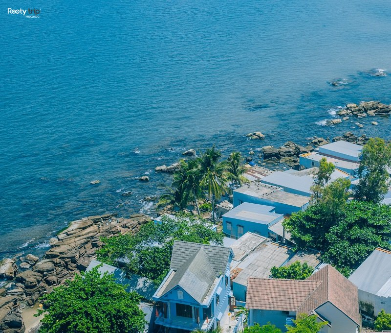
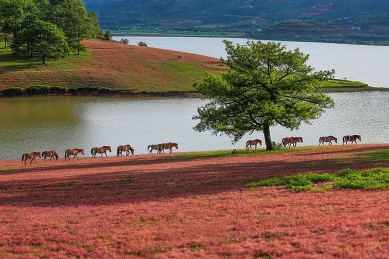

VĂN HIẾN TRAVEL
Cùng bạn khám phá những hành trình tuyệt vời
10 điều cần biết khi đi Đà Lạt mùa cỏ hồng

Cứ vào cuối tháng 10 đến hết tháng 11, những triền đồi ngoại ô Đà Lạt lại khoác lên mình sắc hồng dịu dàng của cỏ dại. Người địa phương gọi đây là mùa "cỏ tuyết" vì vào sáng sớm, khi sương còn đọng trên lá, cả đồi cỏ như phủ một lớp trắng mỏng, lấp lánh dưới nắng đầu ngày. Nếu bạn đang lên kế hoạch săn mùa cỏ hồng, dưới đây là 10 điều cần biết để chuyến đi trọn vẹn hơn.
1. Thời điểm đẹp nhất chỉ kéo dài khoảng một tháng
Cỏ hồng bắt đầu nở rộ từ cuối tháng 10 và đạt độ đẹp nhất vào khoảng giữa đến cuối tháng 11. Một số năm thời tiết thuận lợi, cỏ có thể còn đẹp sang đầu tháng 12 nhưng sắc hồng thường không còn dày và rực như chính mùa. Sau đó, cỏ dần khô và chuyển sang màu nâu nhạt khi bước vào mùa khô của cao nguyên. Vì vậy, nếu mục tiêu chính là ngắm cỏ hồng, hãy căn lịch vào đúng khoảng thời gian này thay vì đi muộn.
2. Đi sáng sớm để thấy "cỏ tuyết" và màu hồng đẹp nhất
Khung giờ vàng để ngắm cỏ hồng là từ 5:30 đến 7:30 sáng. Lúc này sương còn phủ trên cỏ, tạo hiệu ứng lấp lánh như tuyết, và ánh nắng đầu ngày còn dịu, chưa gắt. Khi mặt trời lên cao hơn, sương tan dần, sắc hồng bắt đầu hiện rõ nhưng ánh sáng cũng trở nên mạnh hơn. Chiều muộn sau 16:00 cũng là lựa chọn đẹp nếu bạn không muốn dậy sớm, nhưng buổi sáng vẫn là thời điểm được nhiều người săn đón nhất.
3. Chọn điểm ngắm cỏ hồng phù hợp với sức của bạn
Khu vực Thung Lũng Vàng (cách trung tâm Đà Lạt khoảng 14–15km) là điểm dễ tiếp cận nhất, đường trải nhựa tương đối thuận tiện, phù hợp với người lần đầu đi hoặc gia đình có trẻ nhỏ, người lớn tuổi. Khu vực gần Cây Thông Cô Đơn – Suối Vàng có cảnh hoang sơ hơn nhưng đường khó đi hơn, nhiều đoạn dốc và đường đất, không phù hợp với tay lái yếu. Đồi cỏ Masara (huyện Đức Trọng, cách Đà Lạt khoảng 50km) có sắc hồng sậm đặc trưng và không gian rộng, nhưng là lựa chọn cho người sẵn sàng di chuyển xa hơn.
4. Không phải lúc nào cỏ cũng hồng rực như trên mạng

Màu cỏ phụ thuộc rất nhiều vào thời tiết. Nếu trời âm u hoặc sương quá dày, màu cỏ có thể trầm và ngả tím nâu, không rõ như mong đợi. Những ngày trời trong, có sương nhẹ và nắng sớm thường cho khung cảnh rực rỡ nhất. Vì vậy, đừng đặt kỳ vọng quá cao vào việc có được bức ảnh giống hệt những gì bạn thấy trên mạng xã hội; hãy đến với tâm thế tận hưởng cảnh quan và chấp nhận điều kiện thực tế.
5. Mặc đủ ấm trước khi nghĩ đến chuyện đẹp
Sáng sớm Đà Lạt rất lạnh, đặc biệt ở các khu đồi trống. Hãy ưu tiên áo chống gió, áo nhiều lớp, giày bám tốt và tất dự phòng vì cỏ có thể ướt sương. Trang phục đẹp chỉ thực sự có giá trị sau khi bạn đủ ấm và di chuyển an toàn trên địa hình trơn. Về màu sắc, tông trắng, kem, be, nâu đất hoặc pastel thường lên ảnh hài hòa với thảm cỏ hồng. Nếu muốn nổi bật hơn, có thể chọn màu tương phản nhưng tránh họa tiết quá rối.
6. Đừng đi sâu vào thảm cỏ chỉ để chụp ảnh
Một lỗi thường gặp là giẫm lên cỏ để tìm góc máy đẹp. Việc này tạo ra những lối mòn, làm ảnh hưởng cảnh quan tự nhiên và khiến những người đến sau không còn được thấy thảm cỏ nguyên vẹn. Bạn hoàn toàn có thể có ảnh đẹp bằng cách đứng ở mép lối đi được phép, dùng góc máy thấp để triền cỏ trông dày hơn, hoặc dùng ống kính dài để nén cảnh mà không cần đi sâu.
7. Chuẩn bị giày phù hợp và nước uống
Địa hình đồi cỏ thường là đất và cỏ, có thể trơn sau mưa hoặc ướt sương. Giày thể thao hoặc giày bata có độ bám tốt là lựa chọn an toàn hơn cao gót hay sandal. Nếu muốn mang giày đẹp để chụp ảnh, hãy mang theo trong túi và chỉ thay khi bắt đầu chụp. Khu vực đồi cỏ thường xa trung tâm và ít hàng quán, nên mang theo nước uống và đồ ăn nhẹ để giữ sức.
8. Kiểm tra thời tiết và đường đi trước khi xuất phát
Đường đến một số đồi cỏ là đường đất, có thể lầy và trơn sau mưa. Nếu đi vào ngày có mưa lớn hoặc mưa kéo dài, việc di chuyển sẽ khó khăn hơn nhiều, thậm chí không an toàn. Hãy xem dự báo thời tiết trước khi đi và cân nhắc hoãn nếu điều kiện không thuận lợi. Với những điểm khó như Cây Thông Cô Đơn, người chưa quen đường nên đi cùng người địa phương hoặc chọn dịch vụ xe jeep thay vì tự lái xe máy.
9. Đi sớm nhưng đừng đi trong bóng tối nguy hiểm
Nhiều người muốn có mặt trước bình minh nên xuất phát từ rất sớm, thậm chí khi trời còn tối. Tuy nhiên, không nên đi vào đường rừng tối chỉ để kịp khung giờ chụp ảnh. Với người không quen đường, trẻ nhỏ hoặc người lớn tuổi, nên đến sau khi trời sáng rõ và chọn điểm gần đường, dễ tiếp cận thay vì mạo hiểm. Một buổi sáng có điều kiện thời tiết phù hợp quan trọng hơn việc có mặt đúng một khung giờ cố định.
10. Kết hợp ngắm cỏ hồng với các trải nghiệm khác một cách hợp lý
Mùa cỏ hồng cũng là mùa hoa dã quỳ nở vàng trên các triền đồi, và buổi sáng sớm là thời điểm đẹp để săn mây. Nếu có hai ngày, bạn có thể dành một buổi sáng cho cỏ hồng, một buổi cho trung tâm Đà Lạt hoặc các điểm gần đó. Tuy nhiên, không nên ghép quá nhiều điểm ở các hướng di chuyển khác nhau vào cùng một buổi vì sẽ khiến chuyến đi vội vàng và mất đi sự thư thái. Mục tiêu của mùa cỏ hồng là cảm nhận vẻ đẹp dịu dàng của cao nguyên, không phải chạy đua cho đủ các điểm check-in.